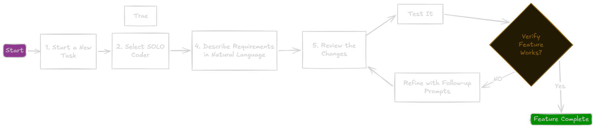
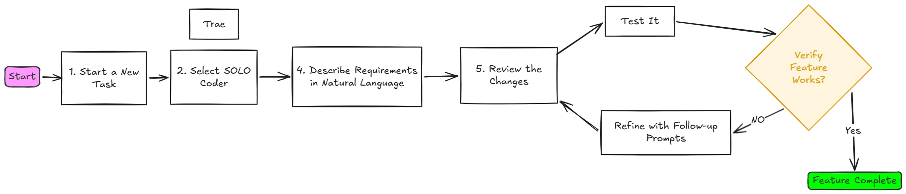

Overview
Vibe Coding is a conversational approach to building features quickly. Instead of writing detailed technical instructions, you simply describe what you want in everyday language. The AI agent reads your project files to understand the context, then turns your ideas into working code ?o coding expertise required.
In this module, you'll experience the speed and simplicity of Vibe mode by integrating a local LLM for paraphrase quality evaluation.
When to Use Vibe Mode
Vibe mode excels at:
- Quick UI additions - Adding buttons, forms, or visual elements
- Simple feature enhancements - Extending existing functionality
- Bug fixes - Addressing specific issues in isolated components
- Refactoring - Improving code structure in single files
Vibe mode works best when you can describe the desired outcome in a single, focused prompt. If you find yourself writing multiple paragraphs of requirements, consider using Spec mode instead.
How the AI Agent Understands Your Codebase
Before you write a single prompt, the AI agent has already analysed your project:
- Codebase scanning ?eads your file structure, dependencies, and architecture automatically
- Pattern recognition ?nderstands your tech stack, frameworks, and coding style from the actual code
- Documentation awareness ?icks up on README files, rules files like AGENTS.md, and any project docs
- Dynamic context building ?reates a mental model of your project as it explores
This means you don't need to explain:
- "Use TypeScript"
- "Follow React hooks patterns"
- "Match the existing button styling"
- "Put it in the right directory"
The agent already knows. You just describe what you want, not how to build it.
What You'll Build
In this module, you'll add an LLM evaluation panel to the paraphrase results page - a feature that demonstrates Vibe mode's strengths for focused API integration and UI changes.
This exercise will help you understand:
- How to write effective Vibe prompts for LLM integration
- When Vibe mode is the right choice for API-driven features
- How steering documents work behind the scenes
- The iterative nature of conversational coding
The Vibe Workflow


Click to enlargeVibe mode is iterative. Your first prompt doesn't need to be perfect. Start with the core functionality, test it, then refine with follow-up prompts like "add colour coding to the scores" or "show improvement suggestions below the score."
Example Prompts: Good vs. Poor
Understanding what makes a good Vibe prompt helps you get better results faster. AI agents don't "see" your screen or read your mind ?hey only know what you tell them. A clear, specific prompt gives the agent the context it needs to generate exactly what you want.
Example 1: Adding LLM Integration
Poor prompt: "Add AI evaluation to the paraphrase page that looks nice"
Good prompt: "Add an evaluation panel next to the paraphrase output that calls the Ollama API at localhost:11434. Send the paraphrased text and display the quality score returned."
Example 2: UI Display Changes
Poor prompt: "Make the scores look better"
Good prompt: "Display the evaluation score with colour coding: green for scores above 7, yellow for 4-7, and red for below 4. Add a progress bar visual."
Example 3: Bug Fixes
Poor prompt: "Fix the evaluation"
Good prompt: "The evaluation panel shows an error when Ollama is not running. Add a friendly message explaining that Ollama needs to be started on localhost:11434."